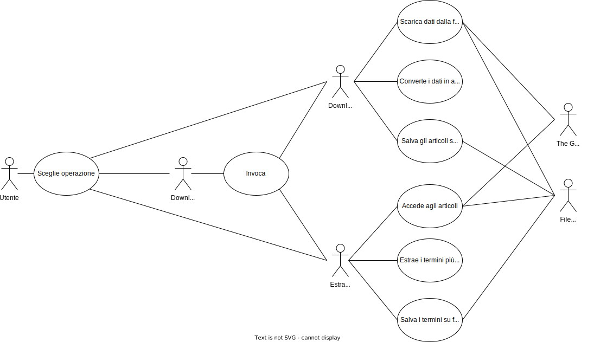

Documento dei Requisiti
Introduzione
In questo documento vengono trattati in modo approfondito i requisiti del progetto, ponendo particolare attenzione a:
- funzioni supportate
- dipendenze da interfacce software e di comunicazione
- limiti di progettazione
- casi d'uso
Definizioni, acronimi e abbreviazioni
peso: numero di documenti in cui appare un termine.
Indice
1. Descrizione generale
1.1 Funzioni supportate
Il programma, al momento, supporta le seguenti funzioni:
- download
- estrazione
- download ed estrazione
1.2 Dependencies
- download ed estrazione dipende dall'implementazione di download e di estrazione.
2. Requisiti specifici
2.1 Requisiti Interfacce Esterne
2.1.1 Interfacce software
The Guardian API
2.1.2 Interfacce di comunicazione
HTTPS
2.2 Requisiti funzionali
- Il sistema deve poter supportare nuove sorgenti.
- Dopo la fase di download, deve essere effettuata la persistenza su file degli articoli usando lo stesso formato per tutti gli articoli di tutte le sorgenti.
- Il sistema deve poter supportare nuove modalità di memorizzazione ed accesso agli articoli.
- Per estrarre i termini ed il loro peso, è necessario partire dai file in cui gli articoli sono memorizzati.
- Il sistema deve poter supportare nuove strutture per memorizzare ed avere accesso ai termini più importanti
- L’utente deve poter specificare se eseguire solo il download, solo l’estrazione dei termini a partire dai file in cui sono stati memorizzati gli articoli, o entrambe le azioni in sequenza.
2.3 Limiti di progettazione
Il sistema deve essere predisposto ad aggiornamenti futuri.
2.4 Caratteristiche del software
2.4.1 Aggiornabilità e manutenibilità
Il sistema è stato progettato in modo da rispettare le richieste di aggiornabilità e manutenibilità. Grazie all'utilizzo di design pattern che permettono di rendere il codice più flessibile, il sistema è predisposto a supportare nuove sorgenti, nuove modalità di memorizzazione degli articoli e nuove strutture per memorizzare i termini estratti.
3. Appendice
3.1 UseCases Diagram

3.1.1 Descrizione
Descrizione
3.1.2 Descrizione in linguaggio naturale strutturato
Descrizione in linguaggio naturale strutturato